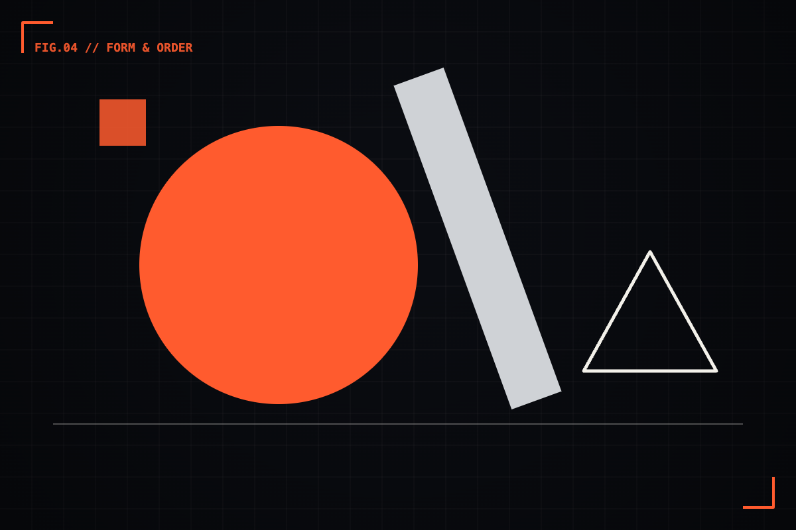

What Bauhaus posters taught me about hierarchy.
A hundred years on, the loudest lesson is still restraint. Notes from a weekend lost in an archive of early modernist print.


I lost a Saturday to an online archive of Bauhaus print — exhibition posters, programme covers, type specimens from the 1920s. I went in for the aesthetic and came out with something more useful: a hundred-year-old lesson in how to make people look where you want them to look.
What strikes you first about that work is how little is on the page. A circle. A diagonal bar of type. Three flat colors, often just red, black and the paper. No gradients, no texture, nothing to hide behind. And yet your eye knows exactly where to go and in what order. That's not luck. That's hierarchy, executed with a confidence most modern screens never reach.
01 / ConstraintLess to work with, more to say
The Bauhaus designers weren't minimal because it was fashionable. They were working with real constraints — limited inks, the mechanics of the printing press, a belief that form should follow function. Those limits forced a kind of honesty. When you can only use three colors and two type sizes, every one of them has to earn its place. There's no room for decoration that doesn't do a job.
I find that liberating, and a little accusing. Modern tools give us infinite color, infinite type, infinite effects — and we use all of it, all the time. The Bauhaus poster is a reminder that abundance is not the same as clarity. Often the most powerful thing you can do to a composition is take something out of it.
They had three colors and a printing press. We have sixteen million colors and we still can't decide what's most important on the page.
02 / ContrastHow to make one thing matter
The trick those posters pull, over and over, is brutal contrast. One element is enormous; everything else is small. One word is the loudest; the rest whisper. There's no committee of equally-sized headings competing for attention — there's a clear winner, and your eye finds it instantly.
This is the discipline I'm worst at, and I see teams struggle with it constantly. When everything feels important, we make everything big, or bold, or colored. And the result is that nothing stands out, because contrast is relative — you can only make something loud by letting other things be quiet. The Bauhaus poster commits. It picks the one thing that matters and lets it dominate, and that single act of nerve does more than any amount of polish.
On your next screen, find the one thing the user must see first and make it unmistakably the loudest. Then force everything else to step down. If two elements are fighting to be first, the design hasn't made its decision yet.
03 / GeometryOrder you can feel
The other thing those compositions share is an underlying grid — usually invisible, always present. Elements sit on a diagonal, align to a hidden axis, repeat at consistent intervals. There's a logic holding the chaos together, even when the layout looks daring. The asymmetry feels deliberate, never accidental, because structure is doing the work beneath the surface.
That's the paradox I keep coming back to: the most expressive, energetic layouts are almost always built on the most rigorous structure. The grid isn't the enemy of creativity. It's the thing that lets you break rules on purpose instead of by accident — and the audience can feel the difference even when they can't name it.
04 / The carry-overOld lessons, new screens
None of this is nostalgia. The work I do — product screens, design systems, interfaces — has more in common with a 1923 exhibition poster than it might seem. Both are about guiding attention through a flat surface. Both succeed or fail on hierarchy, contrast, and restraint. The medium changed; the problem didn't.
So when a layout isn't working, I've started asking what a Bauhaus designer would remove. Usually it's a lot. And what's left — fewer colors, one clear focal point, an honest grid — is almost always stronger than what I started with. A hundred years on, the loudest lesson is still the quietest one: say less, and mean it.